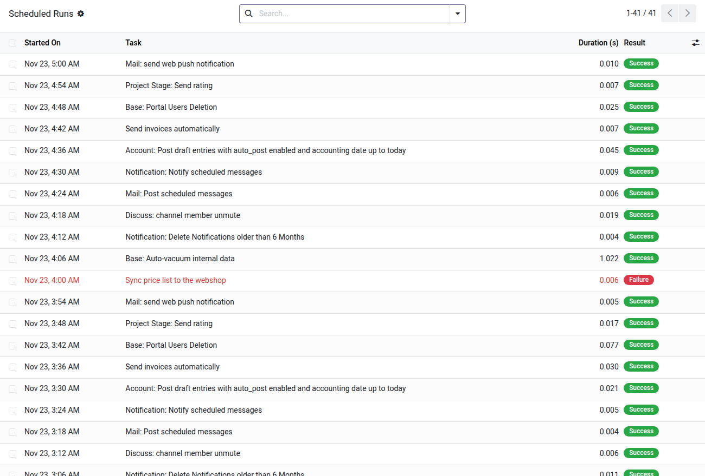
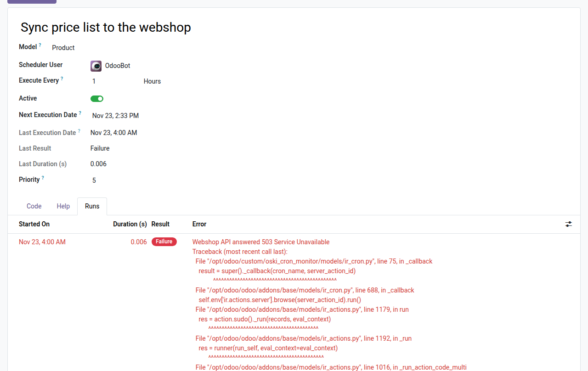

Every run: duration, success, error, and the history that goes with it.
Odoo keeps the date of a scheduled action's last run in lastcall, and the number of consecutive failures in failure_count. Neither appears in any view. An action that fails every night — customer reminders, synchronization, stock computation — therefore only shows up in the server log, if someone thinks to open it.
Each scheduled action run with its start time, duration and result. The one failure stands out in red among the successes.

The scheduled action shows its last result and duration, and a tab lists its runs with the full error message.

Knowing that an action failed is a start; seeing the activity of the whole instance comes next. The OdooSkills range offers operations dashboards, access and change logs, and email queue monitoring. Full catalog: apps.odooskills.com.
LGPL-3 license — compatible with Odoo 18.0 Community and Enterprise. Support: apps@odooskills.com.